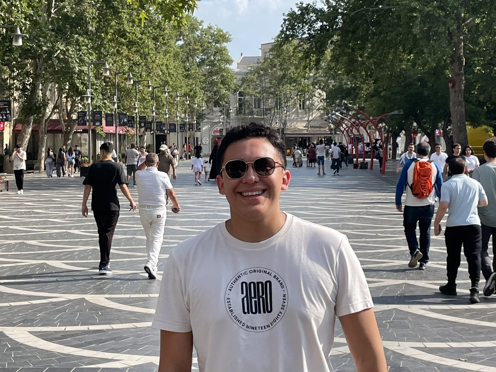

<div class="textcontainer">
<h3>About Me</h3>
<p class="margin"> </p>
<div class="center-row">

<p id="aboutme">
Hi there!
<br> My name is Diego Cuevas Vega and I'm an international student from Mexico City. I am a proud resident of Thayer Hall
and member of the class of 2029.
<br> I am interested in concentrating in Electrical Engineering and doing a secondary concentration in Economics.
I want to study EE because I want to become an entrepreneur and help innovate in the area of robotics bringing a novel sustainable approach.
<br> Fun Facts:
<br> I speak 4 languages (Spanish, English, French German)
<br> I like doing model-making in wood (see more below)
</p>
</div>
<br></br>
<hh>Model-making</hh>
<br> Model-making been one of the most relzing but also transformative hobbies I've engaged in. The assembling of different components
and then seeing them coming together to perform a task convinced me that I wanted to go into Engineering.
Here's a video of a wooden locomotor I assembled last year. This is my favorite model because it involves active movement.
<br></br>
<video width="640" height="480" controls>
<source src="TRAIN.mp4" type="video/mp4">
</video>
</div>